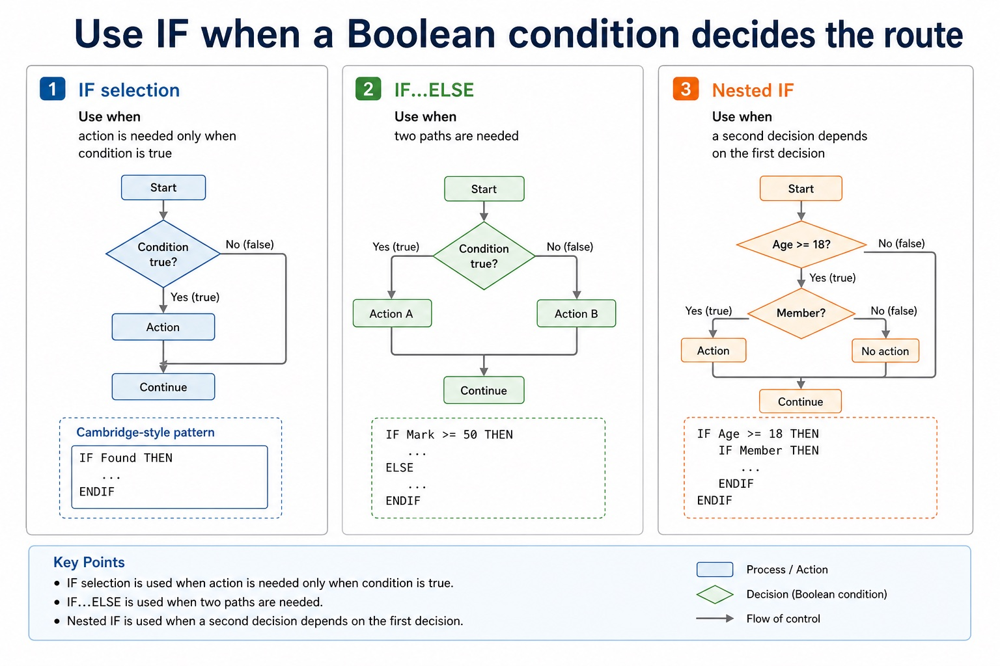

Section 11.1 requires pseudocode for the declaration and initialisation of constants, declaration of variables, assignment of values, arithmetic or logical expressions entered from the keyboard, and input to or output from the console. These are connected statements, not isolated vocabulary.
CONSTANT defines and initialises a fixed named value. DECLARE gives a variable a name and data type. Assignment evaluates the expression on the right of <- and stores the result in the variable on the left. INPUT obtains a value from the keyboard; OUTPUT sends a value to the console.
Arithmetic expressions use operators such as +, -, *, /, DIV and MOD. Logical expressions combine comparisons with AND, OR or NOT and produce BOOLEAN results. Use = for comparison and <- for assignment.
Worked example: Declare, input, calculate and output
CONSTANT PassMark = 50 defines and initialises a constant. DECLARE Mark : INTEGER and DECLARE Passed : BOOLEAN declare variables. INPUT Mark obtains keyboard input; Passed <- Mark >= PassMark assigns the result of a logical expression; OUTPUT Mark * 2 and OUTPUT Passed send arithmetic and Boolean results to the console.
The symbol changes, the update idea does not
The symbol changes, the update idea does not: source-grounded visual explanation.
Lesson fact: Pseudocode vs Java
Lesson fact: Cambridge-style pseudocode
Lesson fact: CONSTANT PassMark = 50
Lesson fact: DECLARE Mark : INTEGER
Lesson fact: DECLARE Passed : BOOLEAN
Lesson fact: INPUT Mark
Lesson fact: Passed <- Mark >= PassMark
Lesson fact: Java support only
Lesson fact: final int PASS_MARK = 50;
Lesson fact: int mark = input.nextInt();
Lesson fact: boolean passed = mark >= PASS_MARK;
Lesson fact: Paper 2 reminder: use Cambridge-style assignment <- in pseudocode. Java uses = for assignment.
Core syllabus practice
Complete Cambridge pseudocode statements: apply and assess
Targeted practice
1. What is the difference between = and <-?
Show answer
= compares values; <- assigns the evaluated right-hand value to a variable.
2. Which statement obtains keyboard input?
Show answer
INPUT followed by the target variable.
3. What type of result does Mark >= PassMark produce?
Show answer
A BOOLEAN result, TRUE or FALSE.
Exam-style question
5 marks
Write Cambridge pseudocode that defines and initialises constant TaxRate as 0.20, declares Price and Tax as REAL, inputs Price, assigns Price * TaxRate to Tax, and outputs Tax.
Show MS
Answer
Guidance
Marks
CONSTANT TaxRate = 0.20
Do not use = for assignment, omit the constant initial value, or replace INPUT/OUTPUT with Java library calls.
IF handles conditions. CASE handles clear choices from one expression. Nested selection handles decisions
inside decisions. The exam skill is not just writing keywords; it is making every possible input land on
the correct path without falling through a missing ELSE like a badly labelled lift.
WriteIF, CASE and nested IF in Cambridge-style pseudocode
Choosethe most suitable selection structure for a scenario
Tracewhich branch runs for normal, boundary and invalid inputs
IFtrue path / false path
CASEchoice A / B / OTHERWISE
Nesteddecision inside a decision
Every branch needs a reason to exist and a way to end.
Why this matters
Selection errors often appear only on boundary or invalid test data, exactly where exam questions like to stand.
Common error
CASE is suitable only when one expression is compared with discrete values. It works best when one expression has clear discrete values.
Warm-up hook
Which output appears?
Given Mark = 50, click the branch that should run.
Pseudocode
IF Mark >= 50 THEN
OUTPUT "Pass"
ELSE
OUTPUT "Resit needed"
ENDIF
Choose the path
Choose the branch for Mark = 50.
IF selection
Use IF when a Boolean condition decides the route
Chinese support: condition 条件, branch 分支, boundary value 边界值。
Form
Use when
Cambridge-style pattern
IF only
action is needed only when condition is true
IF Found THEN ... ENDIF
IF...ELSE
two paths are needed
IF Mark >= 50 THEN ... ELSE ... ENDIF
Nested IF
a second decision depends on the first decision
IF Age >= 18 THEN IF Member THEN ... ENDIF ENDIF
Use IF when a Boolean condition decides the route

Use IF when a Boolean condition decides the route: source-grounded visual explanation.
Lesson fact: IF selection
Lesson fact: Use when
Lesson fact: Cambridge-style pattern
Lesson fact: action is needed only when condition is true
Lesson fact: IF Found THEN ... ENDIF
Lesson fact: IF...ELSE
Lesson fact: two paths are needed
Lesson fact: IF Mark >= 50 THEN ... ELSE ... ENDIF
Lesson fact: Nested IF
Lesson fact: a second decision depends on the first decision
Lesson fact: IF Age >= 18 THEN IF Member THEN ... ENDIF ENDIF